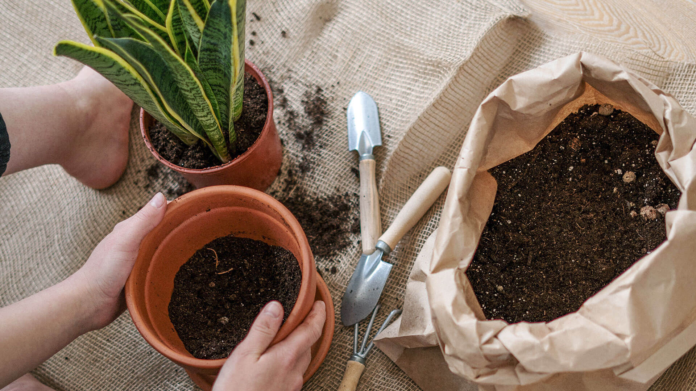

Aquí tienes unos consejos de como cuidar de manera eficiente tus plantas.
Selecciona las plantas adecuadas para tu hogar
Si vas a comenzar o renovar tu espacio, jardín o colección vegetal, tienes que evaluar bien cuáles serán las plantas elegidas, de acuerdo a las condiciones de tamaño y luz solar.
Hay especies que se dan mucho mejor en el verano, por ejemplo, las orquídeas que logran sacar provecho de la humedad del ambiente o incluso del agua en la base de tu maceta. Otras opciones interesantes son las bromelias, bastante resistentes por naturaleza o las suculentas que son verdaderas fanáticas del sol.
Elige una maceta adecuada
Para el crecimiento óptimo de tu planta, es muy importante elegir el material y tamaño de la maceta de acuerdo a su crecimiento y la humedad que necesitan.
Si la planta alcanza los 50 cm de altura, es recomendable usar una maceta de 30 cm de diámetro. Asimismo, si buscas que alcance el metro de altura, debes optar por trasplantarla a una maceta de al menos 50 cm de diámetro.
En cuanto al material, las macetas de plástico son ideales para aquellas plantas que necesitan un suelo húmedo. Por otro lado, si la planta necesita un suelo con mayor drenaje, la mejor opción será una maceta de arcilla o terracota. También asegúrate que tengan un orificio en la base para que drene el agua del riego.
Suelo bien drenado
Un suelo bien drenado es aquel que permite que el exceso de agua se filtre fácilmente a través del suelo, evitando que se acumule alrededor de las raíces de las plantas. Esto es importante porque las raíces de las plantas necesitan oxígeno para sobrevivir, y un exceso de agua en el suelo puede sofocarlas, provocando pudrición de las raíces y otros problemas.
La textura del suelo juega un papel crucial en su capacidad de drenaje. Los suelos arenosos tienden a drenar rápidamente, mientras que los suelos arcillosos retienen más agua y drenan más lentamente. Un suelo ideal para las rosas es una mezcla equilibrada de arena, limo y arcilla, conocido como suelo franco, que ofrece una buena retención de humedad pero también un buen drenaje.

Coloca abono para brindarles nutrientes
El abono es importante para que tus plantas se mantengan fuertes y sanas. El más universal y recomendado es el compost o el humus de lombriz que puedes colocar sobre el sustrato y regar para que se absorban mejor los nutrientes que le brindan.
Puedes optar también por elaborar compostaje casero o realizar tu propio fertilizante natural a base de cáscaras de plátano. Solo deberás hervirlas y colocar esta infusión en un pulverizador o regadera para aplicarlo.